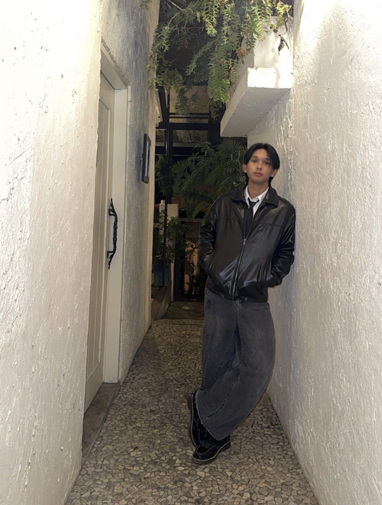

KAEYL KAEYL KAEYL
ARCHIVES ARCHIVES ARCHIVES ARCHIVES
KAEYL
ARCHIVES.
> USER_DATA_STREAM
A VISUAL EXPLORATION OF PASSIONS, ASPIRATIONS, AND THE STORIES THAT SHAPE MY WORLD.
SYS_OP: OPTIMAL
CREATIVE ASPIRATIONS •
STRATEGIC GAMING •
AUDIO FREQUENCIES •
NARRATIVE MEDIA •
CREATIVE ASPIRATIONS •
STRATEGIC GAMING •
AUDIO FREQUENCIES •
NARRATIVE MEDIA •

SYS_ADMIN
Chasing dreams and creative expressions.
I am driven by a deep fascination with creative design and immersive experiences. My goals transcend traditional boundaries, focusing on the things that bring life meaning.
HOBBIES
Tactics // Kinetics
Sim_01 : Digital Strategy
Teamfight Tactics
Algorithmic probability & economy management.
> ACCESS
Sim_02 : Physical Kinetics
Baseball
Diamond statistics & physiological execution.
> ACCESS
> 03. AUDIO_PROFILE
WANTCHU.
by keshi
The lo-fi R&B aesthetic anchors my workflow. This track defines the atmospheric state required for deep focus, keeping me isolated from distractions.
PLAY
FAVORITE SERIES
Narrative // Media

Sim_04 : Narrative Media
Twinkling
Watermelon.
A masterclass in time-travel chronology & youth expression.
> DECRYPT_NARRATIVE